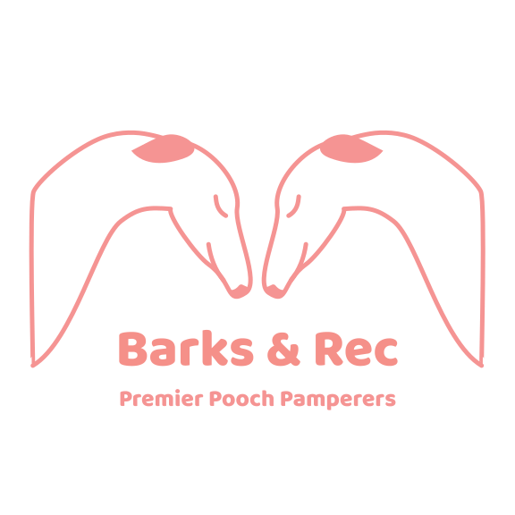
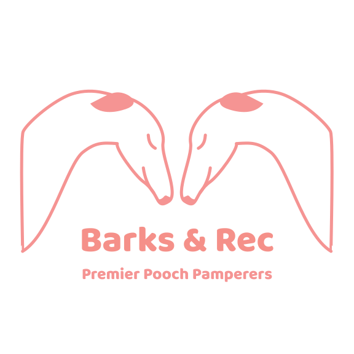
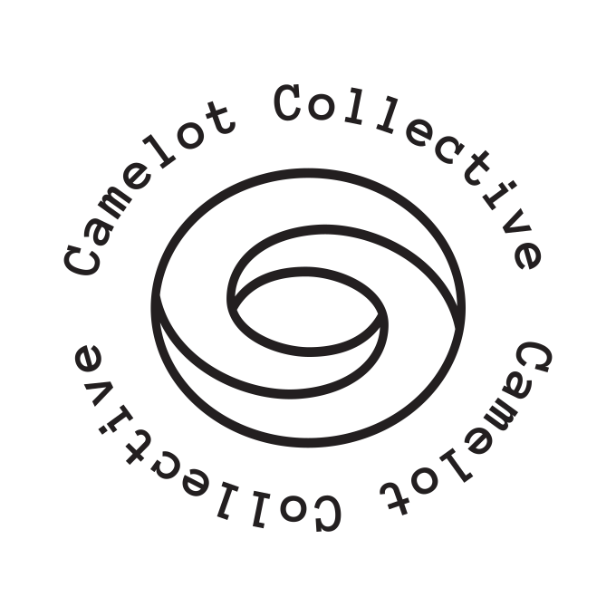
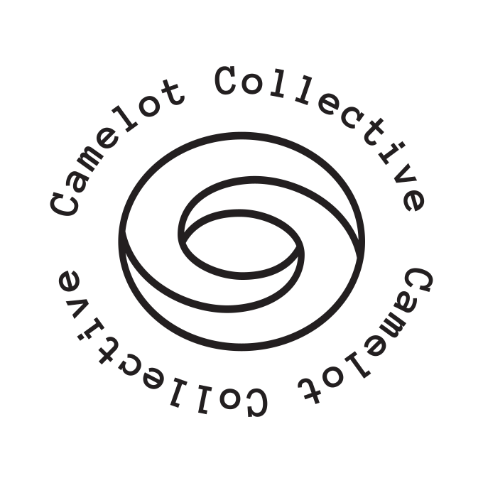

 



My Process
More about my process; extra drawings, typography, patterns, and brand assets; artist statements high and low; thoughts on Wyclef Jean's illuminati presence.
Dolla Dolla Biel
Quality Vintage Goods
B rian Biel runs a highly rated ebay resale business, Dolla Dolla Biel. He makes about ten sales a month of antique furniture, toys and cookware he buys at auction. Given his success on ebay, Brian wanted a logo with a vintage, yet simple design that he could easily print on business cards and perhaps use on a personal website.
I created a badge logo with an arch of script to capture the vintage feel of his merchandise. To draw attention to the name of his business, I included the Eye of Providence found on the back of the one dollar bill. In place of the “NOVUS ORDO SECLORUM” banner I put the name “Dolla Dolla Biel” in an art deco font to match the most common style of his antiques. To me, the Eye of Providence has a geometric simplicity that hints at trendy coffee shop or boutique logos. I also thought the Eye of Providence, known by conspiracy theorists as the symbol of the illuminati, was a funny addition because Wyclef Jean, whose lyric “Dolla Dolla Bills, y’all” inspired the name Dolla Dolla Biel, is among (albeit not prominently so) the group of rappers associated with the illuminati by internet conspiracy theorists.

Barks and Rec
Premier Pooch Pamperers
A logo for a dog daycare business operated by a married couple in a quiet suburban split-level home. After being in the business for three years, they board an average of three dogs a day with dozens of repeat customers. They wanted a logo they could wear on t-shirts or bandanas as an advertisement while walking their doggie guests. A pink (the most common color in their customer’s doggie apparel), twee and trendy logo that suggested their brand was:
Nina Karma
Life Coaching Services
Nina is the kind of friend who is gives clear instructions when asked for advice. She has a knack for prescribing the perfect soothing activity, knowing how best to prepare for a big move and for diagnosing which impulses in her friends are healthy and which are self-destructive. After we joked that she should spend her time and energy on paying customers, she started advertising her services as a life coach.
I wanted to capture the electric feeling of an epiphany in a monogram of her initials, "NK". The lightning bolt looking letter “N” is bordered on each side by a “K”, suggesting a nuclear radiation warning sign. I chose a golden yellow color scheme to enhance this imagery and evoke happiness, energy, empowerment and wealth. I also made her an icon set to represent important human needs, loosely inspired by Maslow’s hierarchy of needs —a lightning bolt, a sock, a mug, a paintbrush and a mushroom.
Women of Note
Famous Women Stationary Set
Shortly after the election, I made five portraits of American women activists who made significant contributions to social justice over the past century: Shirley Chisholm, Sylvia Rivera, Ella Baker, Dolores Huerta, and Billie Jean King, which I sold on greeting cards and prints. I wanted to celebrate the impact of famous women who are less well known than their contributions suggest they should be.


On a more personal level I made these cards to battle the twinge I often feel when someone celebrates the achievement of a woman in a particular field by highlighting the dominance of that particular field by men and the novelty of such an achievement by a woman. For example, in my former field — computer programming — whenever a own would create something original or demonstrate leadership, many of my well-meaning peers would celebrate it by noting the novelty of a woman making significant contributions to computer science. I felt frustrated by this because the very first pioneers in computer science were almost exclusively women, from Ada Lovelace to Grace Hopper.


When I became more interested in women’s history, I noticed this in other fields as well. I was frustrated that there were women who had made an impact on this country since it’s inception, but who seemed to disappear whenever the next woman aspires to something similar.
In addition, I notice that the often well-meaning attempts to celebrate the achievements of women use language that continues to marginalize them. And so I made this series of cards, each with a short bio on the back, and donated half the profits I made from them to Planned Parenthood.

Family Friends
Doggie Greeting Cards
Five cheerful pen and ink portraits of the momentary passions of my favorite neighborhood dogs. I sold these portraits as postcards and greeting cards on Etsy and at the Atlanta coffee shop, Hodgepodge, with the artist group Camelot Collective. I also made a Camelot Collective logo with a cicada nymph to go on the back of each card.


Allison Turns Sixty
A Birthday Party Invitation
An invitation to my mom's 60th birthday party. I made the patten for the back of the invitation from line drawings of my mom's favorite things: crystals, asparagus, shelties, cats, cherry blossoms, angelfish, prawns, microprocessors, margaritas, sunglasses, and bluejays. The typography of the invitation incorporates display fonts from my mom’s favorite decades.


Lost Items
Where Are My Baby Teeth?
Pen and ink portraits of items I have lost under a variety of circumstances. I was inspired by a friend wondering what happened to her baby teeth and I imagined a kind of heaven where all lost things are located. I was also reminded of the opening stanza of Elizabeth Bishop’s Poem, "One Art”:
The art of losing isn’t hard to master;
so many things seem filled with the intent
to be lost that their loss is no disaster.


House Plants
Leggy Little Survivors Pattern
Pen and ink sketches of my favorite house plants, made into a repeating pattern. I sold this pattern as a greeting card on Etsy and at the Atlanta coffee shop, Hodgepodge, with the artist group Camelot Collective.